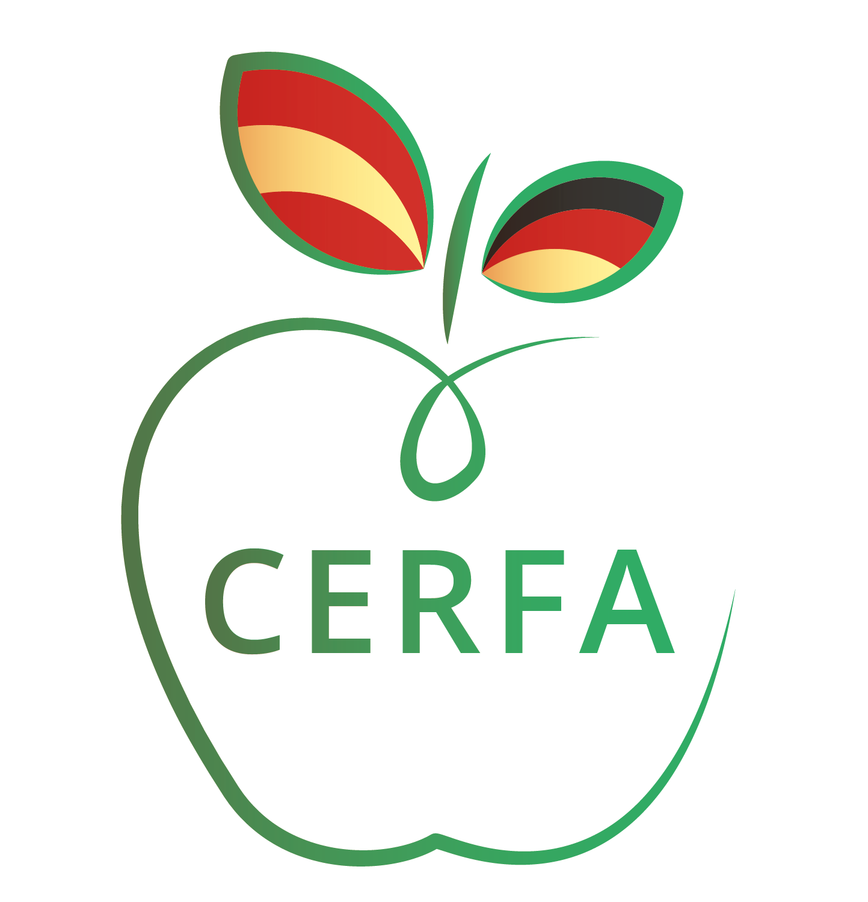
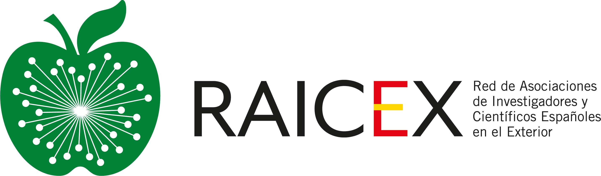

Spanish Researchers Abroad and Science Policy
I have had the opportunity to contribute as a volunteer and ultimately serve on the board of these two independent peer-led organizations:
- CERFA as board president, and of
- RAICEX as board secretary.
These are both independent organizations of Spanish researchers abroad, in Germany and around the globe, respectively.
-
- CERFA, by its acronym in Spanish, is the Society of Spanish Researchers in Germany.
- It is an independent, non-profit organization that brings together Spanish research professionals in Germany, and supports them at any stage of their career. We organize national and international networking events, including multilateral initiatives, providing visibility to our members through seminars, courses, debates, workshops, and symposia.
- Additionally, we act as a link between researchers and institutions —in both Spain and Germany— at personal, professional and the highest institutional levels. Currently, CERFA has approximately 700 members in Germany.
- Positions held:
- President 2022-2024
- Vice-president 2020-2021
- Regional Director for Berlin-Brandenburg since 2015
- Co-founding member since 2013
-
- The societies analogous to CERFA, which function independently in their respective countries, came together in 2018 and founded RAICEX: 
- RAICEX channels the voice of over 18 organizations worldwide and provides service to its individual members across national borders.
- It also represents a unified point of contact for Spanish institutions in science-policy matters, an arena in which we are a recognized stakeholder, frequently consulted for legislation and government actions regarding issues of interest to our more than 4000 members.
- Positions held:
- Secretary 2024
- Treasurer 2023